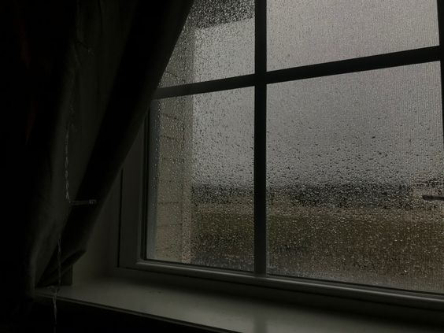
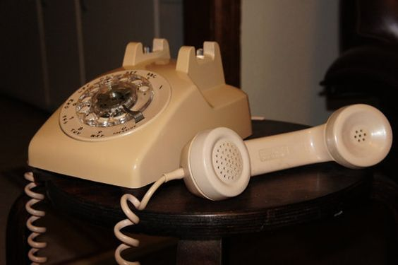
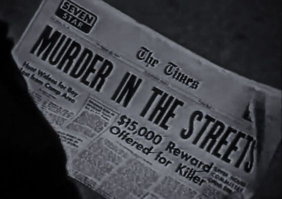
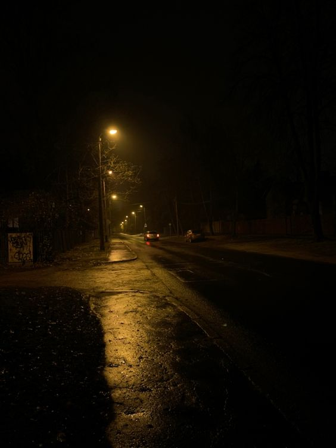
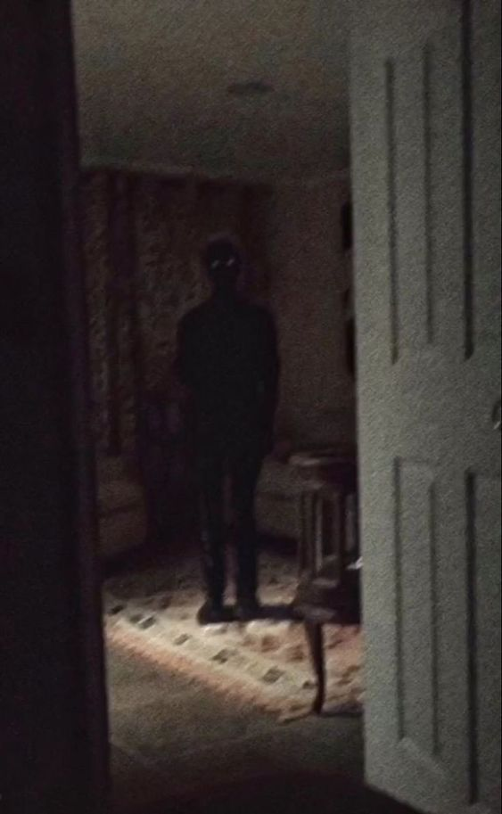
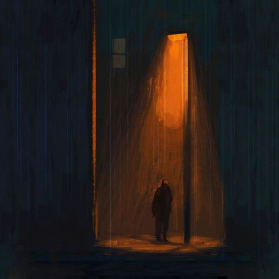

Em um dia chuvoso, as 23:00 da noite, você estava com muita fome e então decide pedir alguma comida, seu amigo, André estava junto com você porque ele iria dormir em sua casa. Para onde vocês deveriam ligar?


Vocês decidiram ligar para a pizzaria... Um atendente com a voz bem grossa atende sua chamada: "Boa noite, qual seria o pedido de vocês?
Ninguém respondeu, o atendente desligou, o que devo fazer agora?
Claro, claro, uma boa opção... já estamos preparando especialmente para você, aguarde e tenha uma boa noite.
...

Você não viu os noticiários? estes crimes geralmente acontecem esse horário, não sabemos quem são os criminosos, eles se disfarçam de entregadores para descobrir o endereço de suas vítimas, ou até mesmo já sabem onde elas moram. Então tome cuidado rapaz, e tenha uma boa noite. Atendente desliga.
Um cara com uma voz animada atende: "Olá caro cliente, o que deseja? espero que você esteja ligado nos crimes que estão acontecendo por entregadores... se eu fosse você eu ficaria esperto.
OK, já vamos preparar seu pedido, saiu 50,99, reais, pague na entrada. "O atendente desligou"
Você decidiu tirar um cochilo... você acorda com o seu amigo te cutucando e ele susurra para você "hey, acho que tem algo de estranho acontecendo, a campainha tocou, então fui ver se era a nossa comida, e adivinha? não tinha ninguém lá. Então você decide:?

Você decide ir lá fora, ainda está chovendo e está bem escuro, quase não dá para ver nada... e de repente uma luz de um veículo é avistada chegando perto e uma moto para na frente da sua casa. Algo de estranho está acontecendo, você sente isso. André te espera do lado de dentro enquanto você:
Você se aproxima do homem que sai da moto e vai diretamente a você, e então você escuta uma voz parecida com aquela que você estava falando no telefone.
O homem começa a andar cada vez mais rapido em sua direção, você percebe e começa a correr para dentro de casa, mas quando bate desesperadamente na porte, ela está fechada e seu amigo... infelizmente desapareceu, não importa o quanto você grite, ninguém irá te salvar agora. Você olha para trás e ele está tão proximo... sua visão escurece e você sente uma dor aguniante em seu peito. Uma faca atravessou seu coração e agora você não poderá comer mais seu delicioso hamburguer. Você morreu. Final: Ruim.
Você decide correr e voltar para trás antes que seja tarde, você avista na janela seu amigo André batendo desesperadamente no vidro da janela, você não consegue escutar, mas ele aponta para um pedaço de galho no chão. Você pega o galho rapidamente e tenta se defender do cara que muito provavelmente era um assassino e você era a próxima vítima dele. O que você faz?
Você decide então se defender, mas infelizmente você acerta o homem na cabeça, então você liga para a polícia e explica o que aconteceu. Você é um assassino agora. Final: A vingança
Ele corre até você e enfia uma faca em sua barriga, sua visão começa a escurecer e então... você morreu. Final: Você é um covarde.
Você observa a janela, aquele homem sai da moto e fica parado em frente a sua casa... você fica assutado pois ele não se mexe, e parece como se ele estivesse te encarando olho no olho. André então pergunta "Quem é ele? vou ir lá ver" André sai para fora de casa e você começa olhar a interação dele com o homem lá fora. André começa a correr, você não entende o motivo... o Homem estranho começou a correr em direção ao André.
Você ligou para a polícia: "Alô? Há um assassino do lado de fora perseguindo o meu amigo! o endereço é ********** por favor, me ajuda" "Estamos a caminho" a polícia disse. Enquanto você ligava para a polícia, alguém estava com você, bem atrás de você. Você é apagado por um homem mascarado, onde a sua ultima visão antes de morrer, foi ele te arrastando para o porão pelos pés. A polícia chega na sua casa e começa a investigar a casa, encontram um corpo jogado no chão e com sangue por todo lado. Você morreu. Final: A polícia

Você decide se esconder no porão de sua casa, onde planejava ficar sem ser visto até o amanhecer. Você está seguro agora. ou será que... TINHA ALGUÉM COMIGO Final secreto: Eu morri?

Você esperou uns 30 mintutos até que escuta um barulho de moto do lado de fora, André diz que é o entregador, então você decide ir ver. Wow! pizza, eu e andré comemos a pizza a noite toda, aproveitamos e assistimos um filme mas espera... tem alguém na janela. Final: Bom?
Cerca de 30 à 60 minutos, tenha uma boa noite, ah, antes que eu me esqueça, saiu 70,00 reais as duas pizzas.
Você não teve nenhuma reação pois ficou em choque. Ele te pegou, não há mais nada que você possa fazer agora... "shh, descanse" uma voz grossa fala com você e então sua visão escurece e você para de sentir aquela dor insuportável em seu peito. Final: ??? Por que?
Sua pizza já já chegará, custou 70,00 reais, tenha uma boa noite. O atendente desligou.